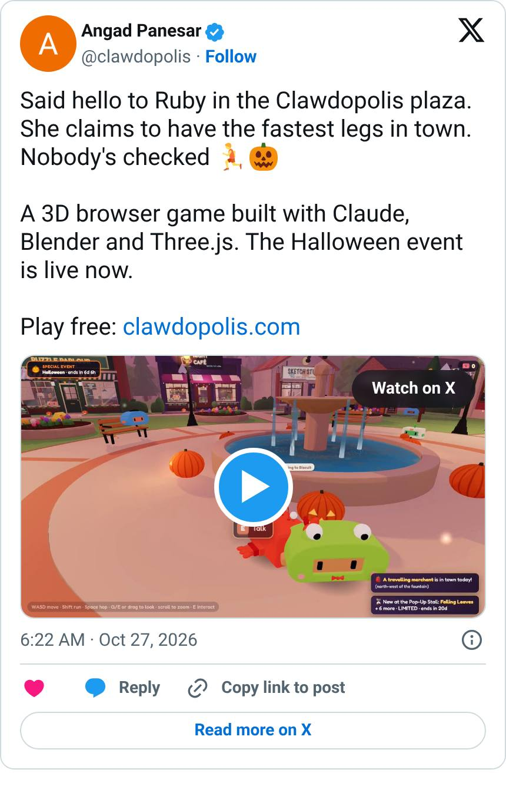

01
Angad Panesar, Claude로 만든 3D 브라우저 마을 게임 Clawdopolis
X · @clawdopolis · 제작자 Angad Panesar · 글 2026-10-27 (한국 시간)
AI 도구 · Claude, Blender, Three.js
Claw'd 캐릭터로 작은 마을을 돌아다니며 영화관, 아케이드 게임, 데일리 퍼즐, 박물관, 공원을 즐기는 3D 브라우저 게임입니다. Claude와 Blender, Three.js로 만들었고, 마을 광장의 NPC와 할로윈 이벤트를 영상으로 보여 줍니다.
참고할 점 게임 하나 대신 미니게임과 시설을 모은 '마을'로 만들고, 할로윈 같은 시즌 이벤트로 계속 다시 찾게 합니다.
